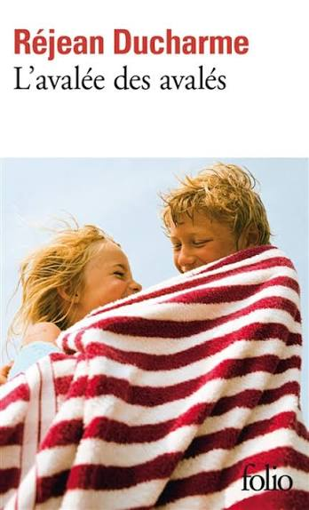
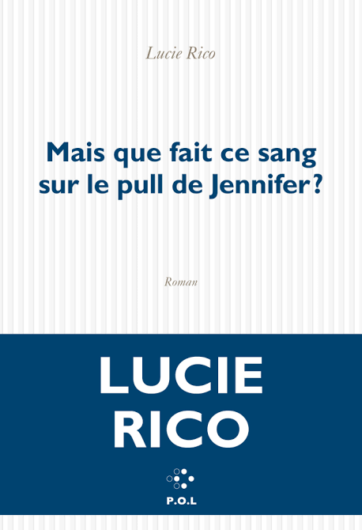

Edmond Dantès, a young sailor with a promising future is falsely accused of treason and sent to
prison.
While in prison, he meets a fellow inmate, Abbé Faria and older man who he begins to view as a
mentor.
Abbé tells Edmond about a treasure hidden on the island of Monte Cristo. Edmond ends up escaping
the prison and finds the treasure. He uses the treasure to transform into a count and get revenge
on the people who falsely accused him.

Bérénice and her brother Christian are born into a very tumultuous family. Their mother is Catholic
and
their father is Jewish. Their parents divide the children between them so Bérénice is raised Jewish
and
Christian is raised Catholic. Despite their parents' toxic relationship, Bérénice and her brother
are really close. But only Bérénice is brave enough to confront and rebel against, and her defiance
has consequences.

Everything was going fine for Jennifer, until she began thinking of a phrase that she can't seem to
complete.
She reaches out to her family for help but that doesn't help much. With this unfinished phrase
haunting her,
Jennifer decides to dig into her past and find the missing words. As she digs deeper, the truth
begins to blur
and she begins to lose herself.